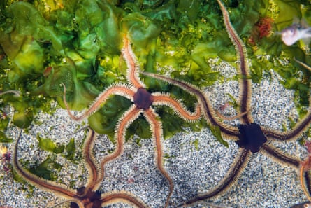
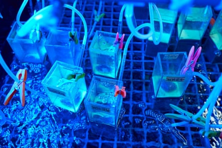
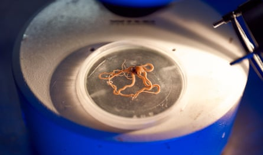

B rittle stars have a lot of remarkable features as a species. Many of them are bioluminescent and can flash blue light; some will have patterns and do displays. These slender relatives of starfish can be very beautiful to look at and come in a range of colours – in the tropics, for example, they can be red, black or orange. And they’ve got spines all over them, so they can look quite ornate.
They can also regenerate. Fish and other creatures will often nip off bits of their arms – known as sublethal predation – so they are constantly regenerating themselves. You can even break off all their arms, and sometimes even half the disc, and the brittle star will still regenerate.
Brittle stars have the same radial symmetry and five arms as starfish but their arms are much thinner and can be 60cm long, depending on the species.
Black brittle stars (Ophiocomina nigra), one of about 2,000 species.Photograph: blickwinkel/Alamy
People talk about the blue planet but I think of Earth as the brown planet, because most of the Earth’s environment is the sea floor. It measures 361m sq km (140m sq miles) and is full of sediment – and where there is sediment, there are often brittle stars. In total, there are about 2,000 species of brittle stars and about half of these live at depths of more than 200 metres.
As part of the Convex Seascape Survey , I have studied brittle stars all over the world. A lot rest on rocks or on the sediment surface, but my favourite species is the Amphiura filiformis , a burrowing brittle star found around British shores. Its centre disc is typically only 5mm wide and it’s extremely numerous – in a 1 sq metre area, you can find up to 3,000 individuals of that species alone.
Brittle-star discs in temperature-controlled seawater baths bubbled with air at current or future carbon-dioxide levels to gauge the effects of climate change.Photograph: G Iwan Jones/Guardian
It is my favourite species because it constantly turns over the environment and changes it, and you can see that happening in front of you; you can see the brittle star moving particles around and making mounds on the surface, injecting oxygen into the sediment, and breaking down the detritus that has fallen to the sea floor.
When brittle stars such as Amphiura come up to the surface of the seabed, they put their arms up to catch particles passing by with the current. When currents become too slow or too fast, they will retract back down into their burrows and feed on the deposits by moving the particles down their arm to their mouth.
I was the first scientist to obtain time-lapse footage of a population of burrowing brittle stars doing this. Nobody had seen their activities below, and I was struck by how active they were and how organised the population was, each at the same depth and neatly spaced apart like a row of soldiers.
The brittle stars’ skeleton is made up of calcium carbonate, or limestone, making themn particularly vulnerable to ocean acidification.Photograph: Gareth Iwan Jones/The Guardian
Brittle stars are essentially scavengers – they will eat particles of anything that is organic, including faecal pellets, the remains of dead fish that have fallen to the bottom of the ocean, and algae. They are extremely efficient in that way – they take in everything that is given to them.
But since pollution settles at the bottom of the ocean and gets locked into the sediment, they are also very vulnerable. They are not like fish that can swim away; they are stuck in the sediment, they have to absorb it.
When it comes to the climate crisis, brittle stars are the canary in the coalmine because their skeleton is made up of calcium carbonate: limestone, essentially. As temperatures warm and ocean acidification starts to spread, they are literally dissolving.
They are also a keystone species. Like elephants in the savanna that knock trees down, which allows the grass to grow, they are constantly modifying their environment and making it more benign for other species. Because they do this so well and so efficiently, their presence alone enhances sea-floor biodiversity.
Over the last half a billion years, we have gone through a huge diversification of life and brittle stars played a significant role in that. And they continue to have a significant role to play. So my hope is that one day we will recognise how vital these charismatic organisms are and put measures in place to protect them. As told to Donna Ferguson
- Martin Solan is a professor of marine biology at the University of Southampton